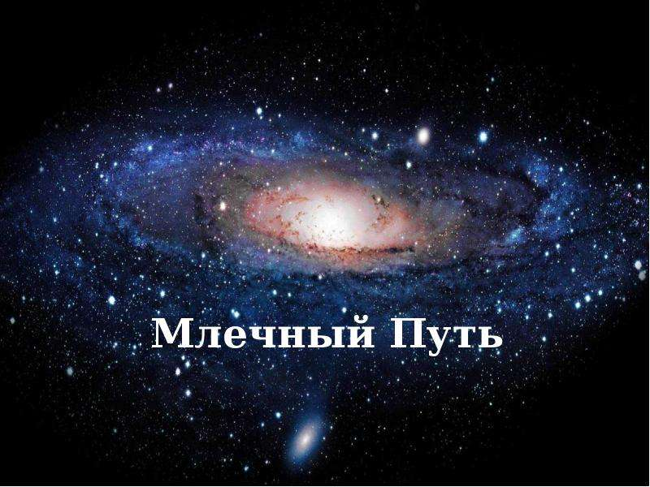

Галактика, в которой находится наша Солнечная система, называется Млечный путь. Это спиральная галактика, в которой находится Земля и Солнечная система. Радиус звёздного диска Млечного Пути и радиус Галактики составляют 16 килопарсек. Полная масса Галактики с учётом тёмной материи оценивается как 1—2⋅1012 M⊙. В Млечном Пути находится от 100 до 400 миллиардов звёзд, а его светимость составляет 2⋅1010 L⊙. По сравнению с другими спиральными галактиками Млечный Путь имеет довольно большую массу и высокую светимость. Солнечная система расположена на расстоянии в 7,5—8,5 килопарсека от центра Галактики и движется вокруг него со скоростью 220 км/с.
Пространство между звёздами нашей Галактики заполнено разреженной межзвёздной средой, которая сосредоточена в диске и состоит на 99 % из газа — преимущественно водорода и гелия.
| Фаза | Плотность (см^3) | Температура (K) | Общая масса (М) | |
|---|---|---|---|---|
| Атомарный газ | Холодный | 25 | 100 | 4*10^9 |
| Теплый | 0,25 | 8000 | 4*10^9 | |
| Молекулярный газ | 1000 | <=100 | >=3*10^9 | |
| Ионизованная среда | Области II | 10^4 | 10000 | 5*10^7 |
| Диффузная | 0,03 | 8000 | 10^9 | |
| Горячая | 6*10^-3 | 5*10^5 | 10^8 | |
Если Вы интересуетесь полным загадок миром астрономии, то можете проверить свои знания, пройдя короткий тест по ссылке:
Ссылка на тестМного интересной информации можно найти: astronet.ru